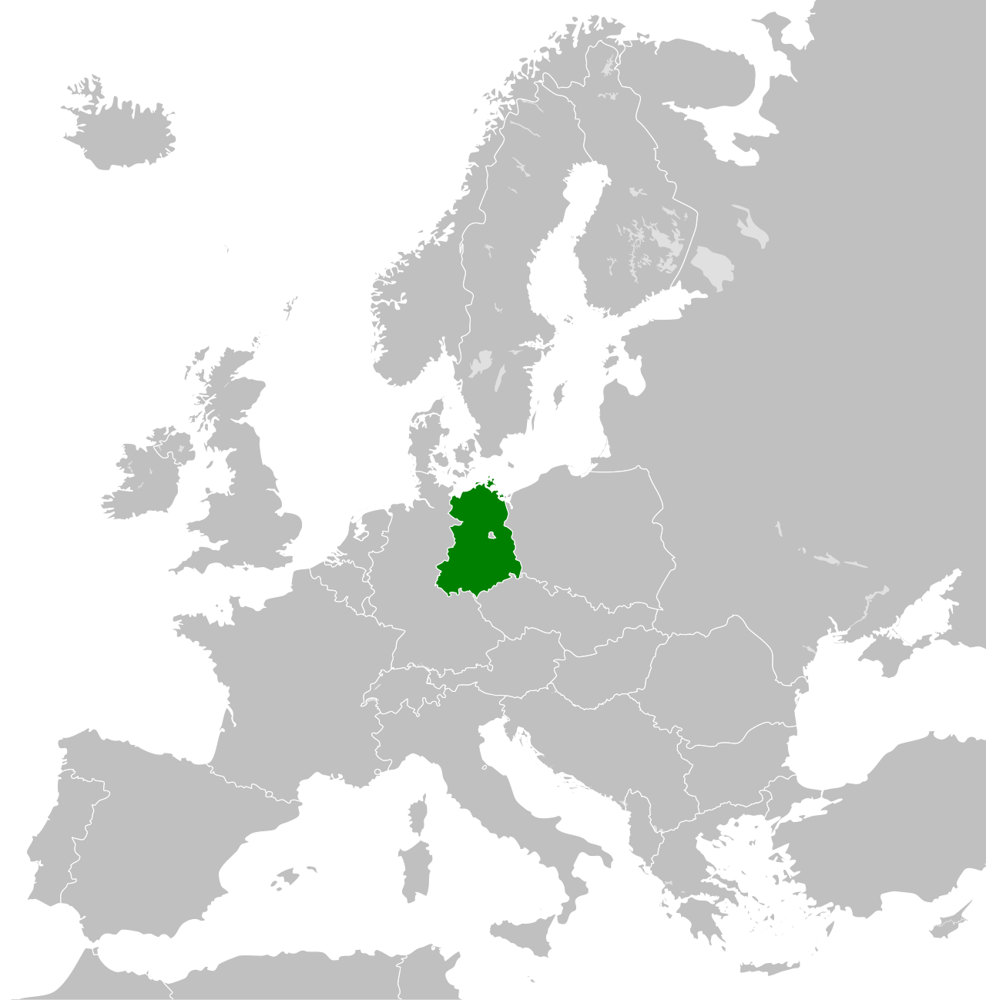

Volume III · 1949 — 1990
The German Democratic Republic existed for forty-one years. It produced its own cars, films, plastic, sportswear, beer, and shortages. The wall around it took the lives of at least one hundred and forty people. On the night of the 9th of November 1989, the country ended in a sentence.
Foreword

It was, depending on which atlas you used, the most successful Communist state in Europe and the least free. Its athletes won Olympic medals. Its citizens watched West German television. Its leaders were, with one exception, dour men in dark suits who had spent the war in Moscow.
The German Democratic Republic was founded on the 7th of October 1949, as a direct response to the founding of the Federal Republic of Germany in the western zones five months earlier. It was, in its first incarnation, the smaller and poorer of the two German states — a country of seventeen million people, mostly in the territories formerly belonging to Saxony, Brandenburg, Mecklenburg, and Thuringia. It contained no Ruhr, no major port, no automobile industry of pre-war scale, and almost none of the chemical plants that had made German industry famous. It contained, instead, brown coal, potash, the Carl Zeiss optical works at Jena, the printing industries of Leipzig, the porcelain works of Meissen, and the Soviet occupation army.
It also contained the eastern half of Berlin, which would, for the next four decades, be the most peculiar capital city in the world: a divided urban island, half of it Communist, half of it Allied, with crossing points, watchtowers, and from August 1961, the most-photographed concrete wall in history. The wall was the defining fact of East Germany. It was also, in the end, what unmade the country: the night the wall fell, on the 9th of November 1989, the GDR's reason for existing fell with it.
What this volume tries to do is to give the country its history back. The GDR was not, contrary to most of the post-1990 commentary, a country of grey misery from beginning to end. It was a country that started in the rubble of the most destructive war in human history, was governed for four decades by Communist parties of varying competence, achieved real social transformations alongside real political repression, and ended in a peaceful revolution that nobody — least of all its own citizens — had thought possible until the autumn it actually happened.
"Nobody has any intention of building a wall." — Walter Ulbricht, press conference, 15 June 1961 — eight weeks before construction began
The Book — eight chapters
After the book
The Guide
East Berlin, Leipzig, Dresden, Erfurt, Weimar, Eisenach, Stralsund, Rostock, the Baltic coast, the Harz, and the strange surviving museums of the disappeared republic.
The Routes
The Border Trail, along the former inner-German frontier. The Plattenbau Route, through the workers' housing of Saxony. The Bauhaus and Industry Route, Dessau to Eisenhüttenstadt.
The Errors
The GDR was not "Germany in colour with the colour drained out." East Berlin was not a slum. The Trabant was not actually made of cardboard. Nine misconceptions answered.